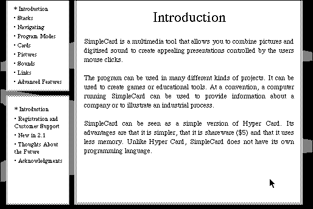

Download
simple_card_2.1.zip (66K) Simple Card 2.1 repackaged into a zipped hfs disk image and checksum file. The disk image can be mounted with Mini vMac.
simple_card_2.1.sit (61K) Simple Card 2.1 in the original format.
copyright: Niklas Frykholm
mod date: Mar 29, 1997
license: shareware
official url :
SimpleCard
“Simple version of Hyper Card”.

If you find these downloads useful, please consider helping the Gryphel Project, which hosts them.
Here are the md5 checksums for the downloads, signed with Gryphel Key 5:
--------- GRY SIGNED TEXT --------- a9ea06a13554299a0a97e939796345bd simple_card_2.1.zip cea8ebd959673d26830f0679f787e9be simple_card_2.1.sit ------- BEGIN GRY SIGNATURE ------- Gry/4Xa8CFcUzxdN/JUJ2ebNXN1zi4fhIG/UG4NK2ePol3rr/k8ELZw3IOySWFls hSGKnJ4zGaKiQP6e0vM33i5N0YpvqQjvN9nzkiCSyxgSQ+krkY5ecYEU217eLP5D ahutvPbGdFBWKsrmE2UTlTDodFppgPsvMPVLG82uzsCLxEgkum3QdHrchmw4yzAo -------- END GRY SIGNATURE --------